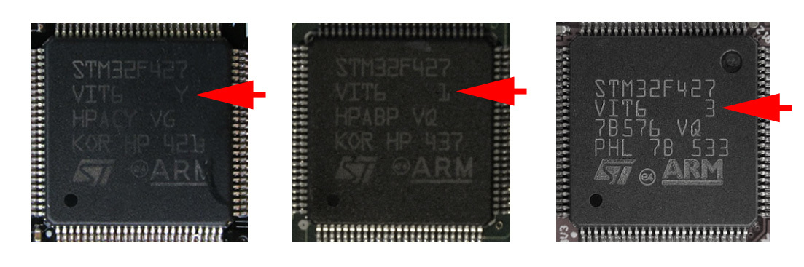

Прошивка Pixhawk / Pixracer
Pixhawk или Pixracer можно прошить, используя QGroundControl или утилиты командной строки.
Различные варианты сборок стабильных прошивок PX4 можно скачать в разделе Releases на GitHub.
В названии файла прошивки кодируется информации о целевой плате и варианте сборки. Примеры:
px4fmu-v2_default.px4— прошивка для Pixhawk с EKF2.px4fmu-v2_lpe.px4— прошивка для Pixhawk с LPE.px4fmu-v4_default.px4— прошивка для Pixracer с EKF2 и LPE (Клевер 3).px4fmu-v3_default.px4— прошивка для более новых версий Pixhawk (чип ревизии 3, см. илл. + Bootloader v5) с EKF2 и LPE.

Для загрузки
px4fmu-v3_default.px4может понадобиться использование командыforce_uploadиз командной строки.
QGroundControl
В QGroundControl откройте раздел Firmware. После этого подключите Pixhawk / Pixracer по USB.
Выберите PX4 Flight Stack. Для скачивания и загрузки стандартной прошивки (вариант с EKF2 для Pixhawk) выберите пункт меню "Standard Version", для загрузки собственного файла прошивки выберите пункт "Custom firmware file...", затем нажмите OK.
Не отключайте USB-кабель до окончания процесса прошивки.
TODO: Иллюстрация.
Командная строка
PX4 может быть собран из исходников и загружен в плату автоматически из командной строки.
Для это склонируйте репозиторий PX4:
git clone https://github.com/PX4/Firmware.git
Выберите необходимую версию (тэг) с помощью git checkout. Затем соберите и загрузите прошивку:
make px4fmu-v4_default upload
Где px4fmu-v4_default – требуемый вариант прошивки.
Для загрузки прошивки v3 в Pixhawk может понадобиться команда force_upload:
make px4fmu-v3_default force-upload